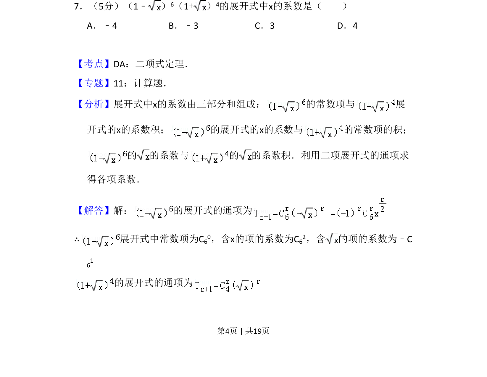
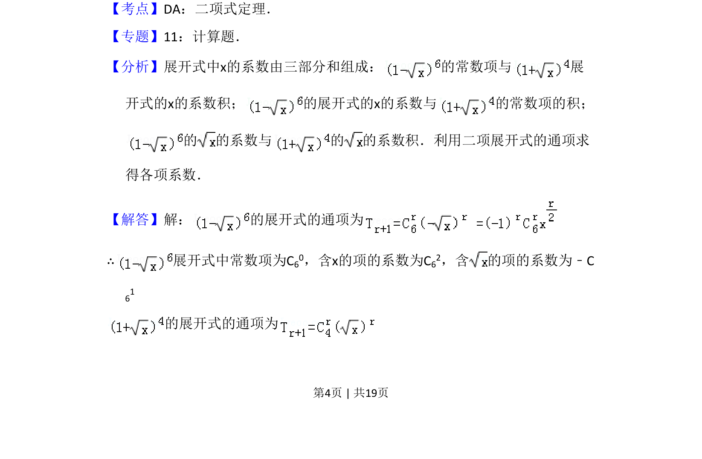
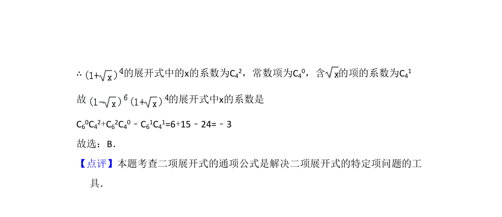

考点：二项式定理 展开式通项 系数组合

求两个二项式乘积展开式中x的系数，需分别展开并组合各项系数。


📄 原 PDF 第 4 页：
素材/真题/吉林/2008-2024·（吉林）数学高考真题/2008年高考数学试卷（理）（全国卷Ⅱ）（解析卷）.pdf
7．（5分）（1﹣ ） 6（1+） 4的展开式中x的系数是（ ） A．﹣4 B．﹣3 C．3 D．4
【考点】DA：二项式定理．菁优网版权所有 【专题】11：计算题． 【分析】展开式中x的系数由三部分和组成： 的常数项与 展 开式的x的系数积； 的展开式的x的系数与 的常数项的积； 的 的系数与 的 的系数积．利用二项展开式的通项求 得各项系数． 【解答】解： 的展开式的通项为 ∴展开式中常数项为C 60，含x的项的系数为C62，含 的项的系数为﹣C 61 的展开式的通项为